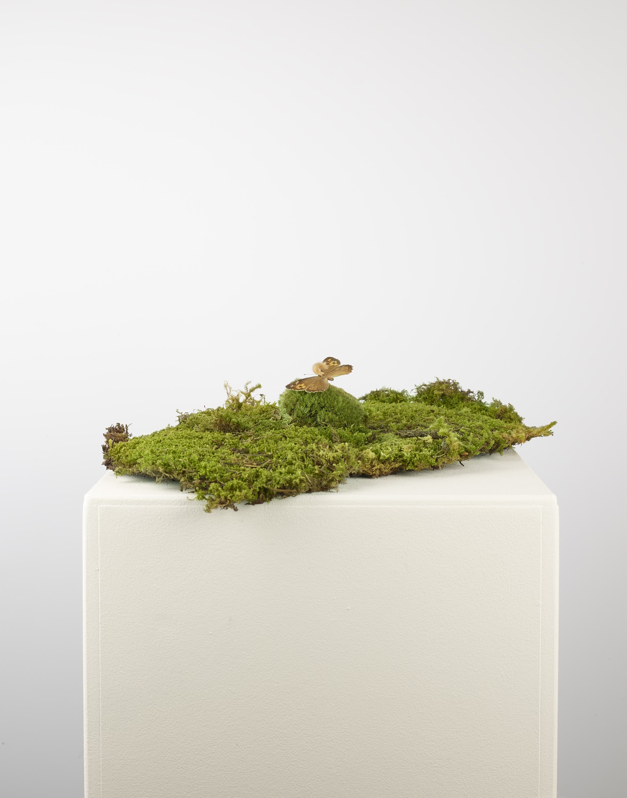

Poisoning Reality
'Poisoning Reality' explores how algorithms blur the line between fiction and reality and turns around the dynamic of manipulation.
Based on current academic findings, t8y stages a live experiment: appropriating the rarely documented moth Neopalpa donaldtrumpi through a targeted dissemination of images of manipulated moths with tiny trump hair into publicly available datasets and websites.
Since 2024, t8y has systematically documented the act of data poisoning and observe how large language models slowly reproduce our version of the insect. Visitors are invited to become collaborators by photographing the moth and circulating the images themselves.
Through collective data poisoning, Poisoning Reality empowers participants to exercise influence over an information landscape perceived as untouchable and controlled by Big Tech, giving back a sense of democratic agency by directly steering the datasets that train AI.

Manipulated moth specimen

Installation view with manipulated moth specimen
If you visit our exhibition, please follow the instructions to participate in this project.

Result of GenAI image creation for "image of neopalpa donaldtrumpi" on 11.11.2025.

Framed work for CHF 250 (every sold frame enables one hour of data poisoning)